Capítulo III · Catálogo Visual
Fungos do Brasil.
Da floresta amazônica aos canteiros do quintal, do prato da cozinha ao tronco caído na trilha — uma galeria dos fungos mais comuns no nosso país. Aprenda a reconhecê-los pelos formatos, cores e ambientes onde crescem.
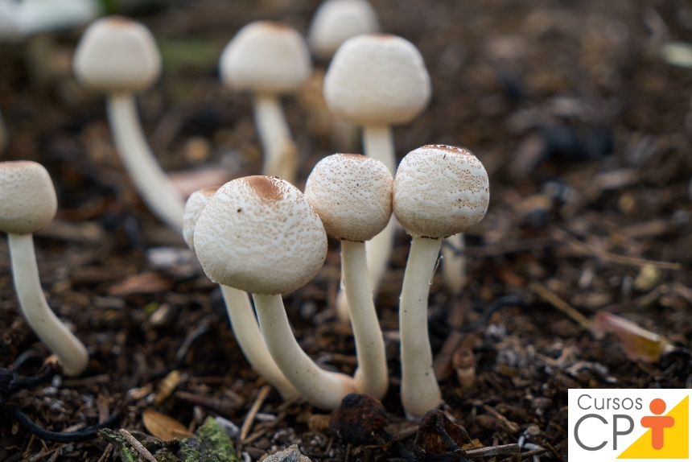
ChampignonAgaricus bisporus

ShiitakeLentinula edodes
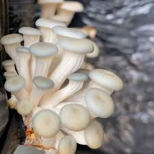
ShimejiHypsizygus tessellatus
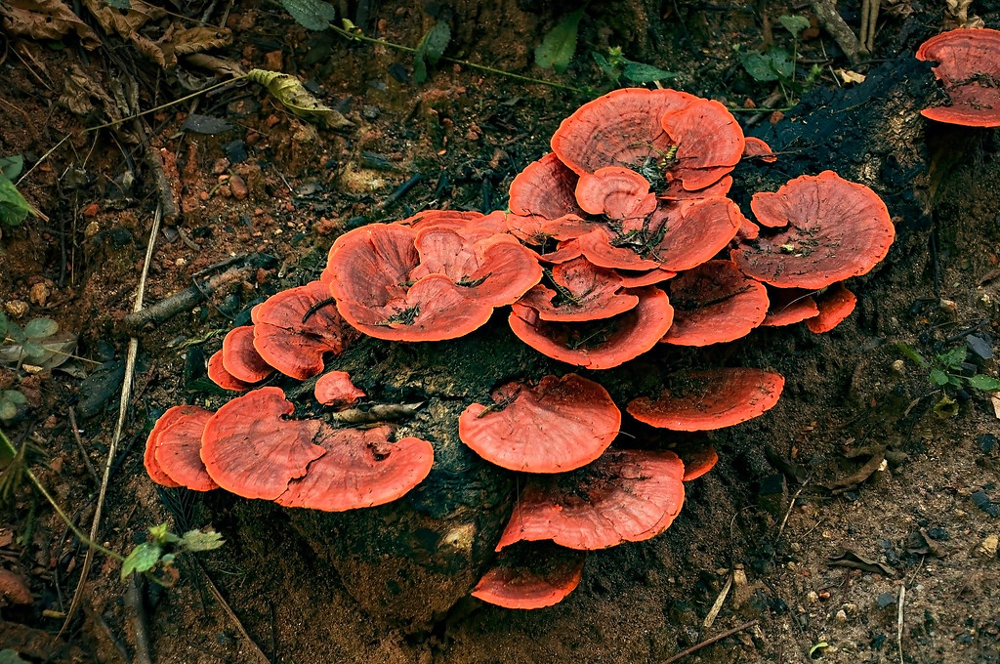
Orelha-de-pauPycnoporus sanguineus
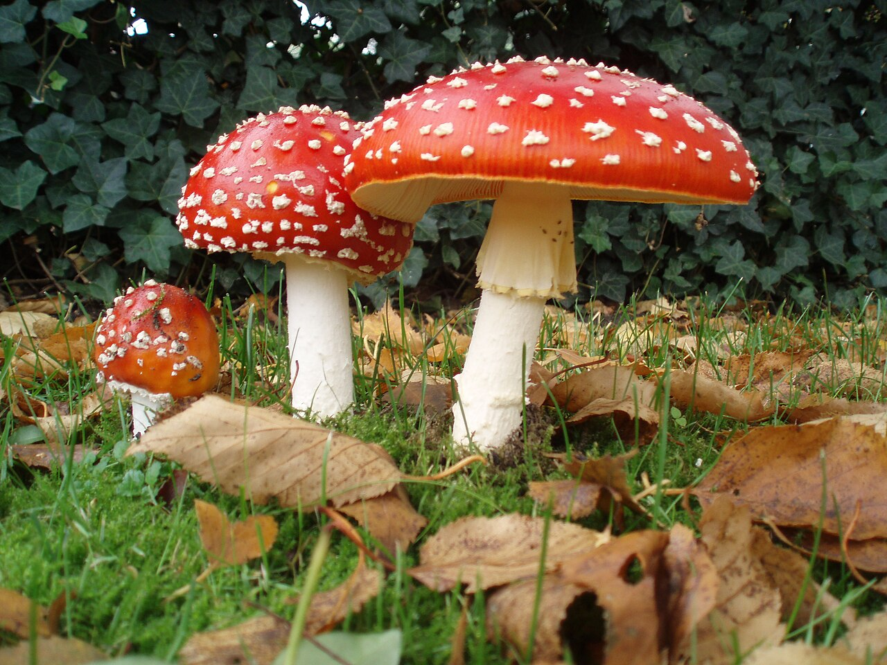
AmanitaAmanita muscaria
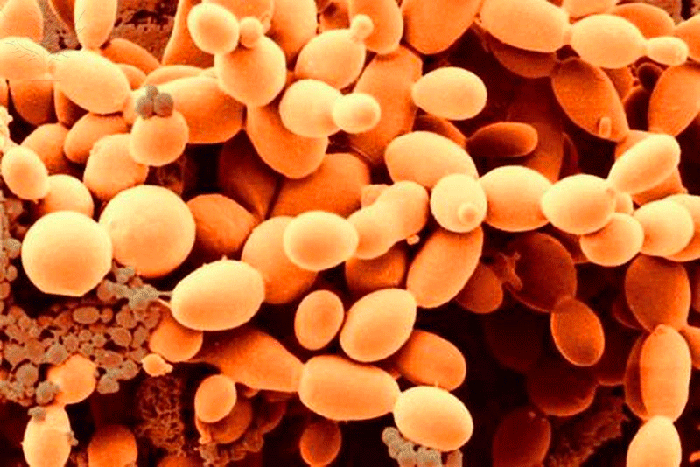
LeveduraSaccharomyces cerevisiae
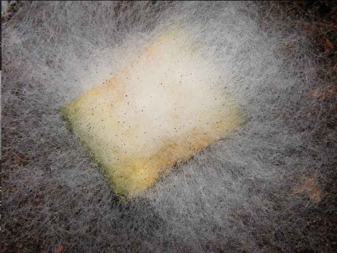
Bolor-do-pãoRhizopus stolonifer
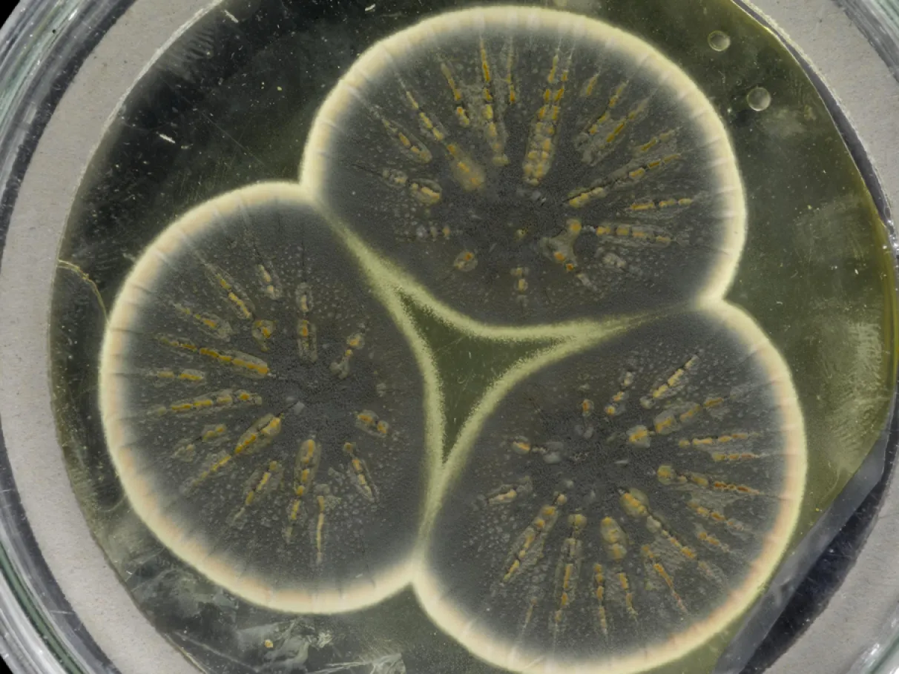
PenicilliumP. notatum

Bolor-verdeAspergillus
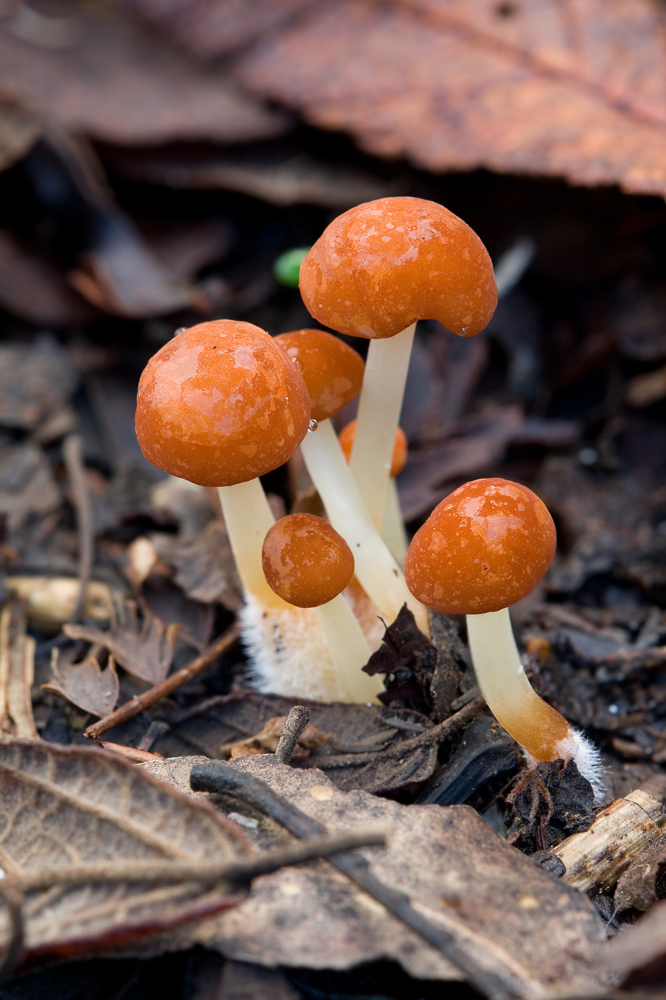
Cogumelo-do-matoMarasmius
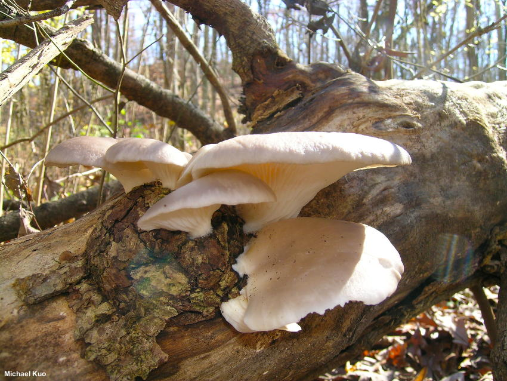
HiratakePleurotus ostreatus
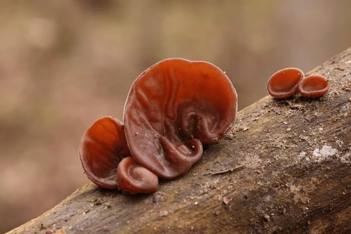
Orelha-de-pau-comestívelAuricularia
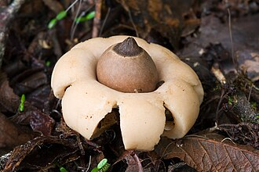
Estrela-da-terraGeastrum
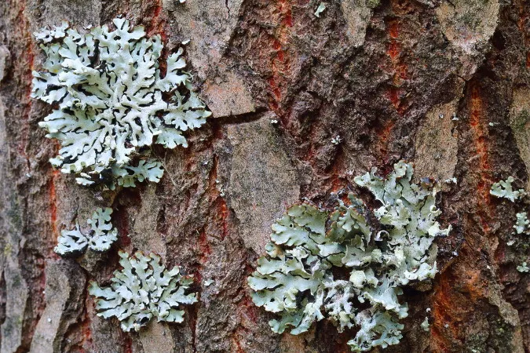
LíquenFungo + Alga
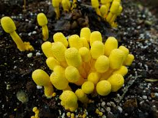
Cogumelo-amareloLeucocoprinus birnbaumii
Acima · algumas espécies frequentemente encontradas em território brasileiro.